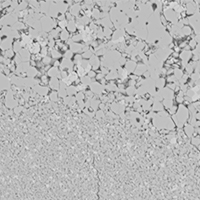

Latest Publication

[1] Modeling of olivine-spinel phase transformation of germanate olivine (Mg2GeO4) by using the phase-field method
DOI:10.1016/j.pepi.2023.107060

[2] Strain localization bands in fine-grained aggregates of germanate olivine and pyroxene deformed by a Griggs type apparatus
DOI:10.1016/j.ijrmms.2021.104812